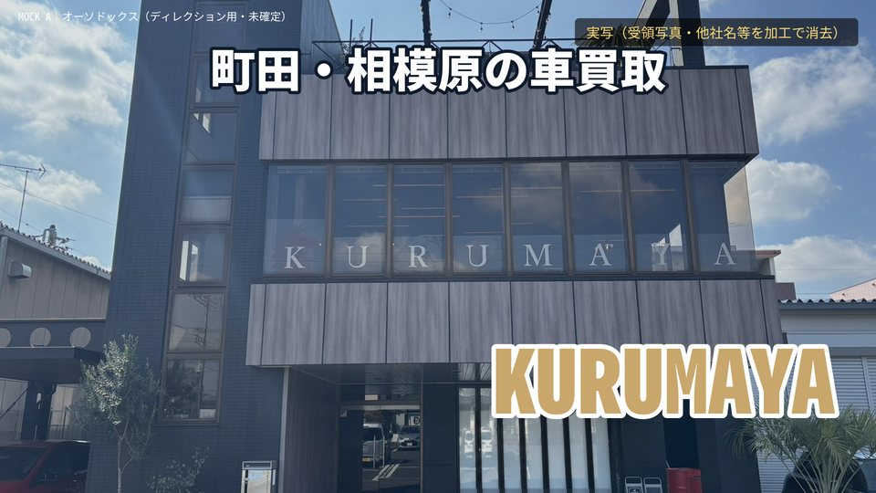
「町田・相模原の車買取」＋KURUMAYA
画像：外観（実写・加工）
株式会社KIT / KURUMAYA｜打合せの合意（買取メイン・査定額の根拠・町田と相模原・最後にレンタカー等・他社名を消す）を反映。山﨑様から受領した外観・内装の写真5枚を使い、足りない場面は仮の絵（AI生成）で補っています。無音・テロップ仮。
外観→内装→代表の商談→根拠→町田・相模原→最後にレンタカー等、の王道。

画像：外観（実写・加工）
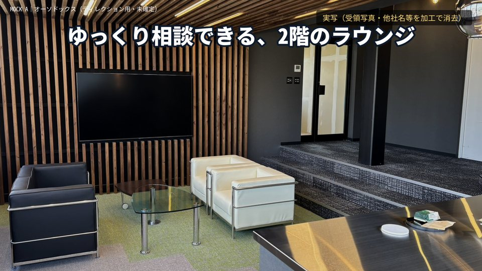
画像：店内ラウンジ（実写・テレビ消去）
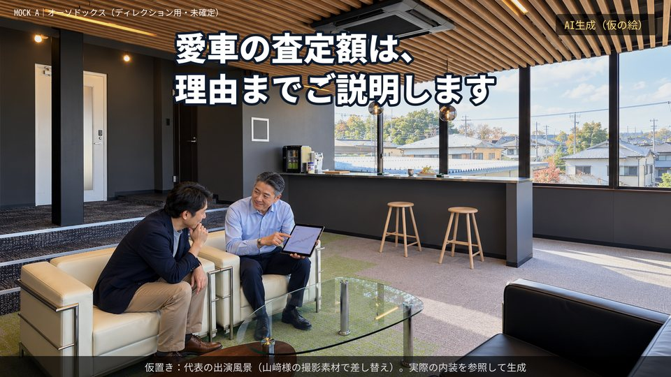
画像：代表の商談（AI仮の絵）
仮置き：代表の出演風景（山﨑様の撮影素材で差し替え）。実際の内装を参照して生成
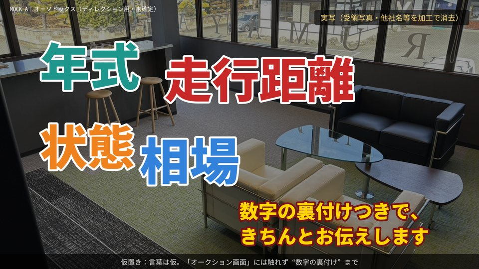
画像：店内＋単語（実写）
仮置き：言葉は仮。「オークション画面」には触れず“数字の裏付け”まで
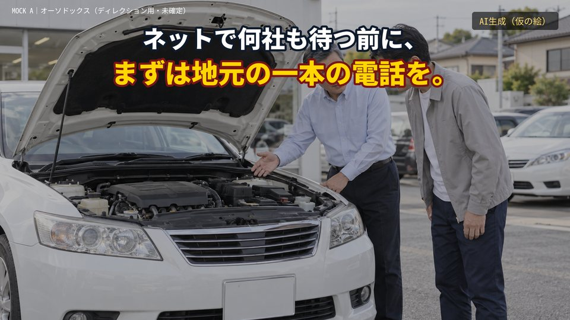
画像：ボンネットを一緒に見る（AI仮）
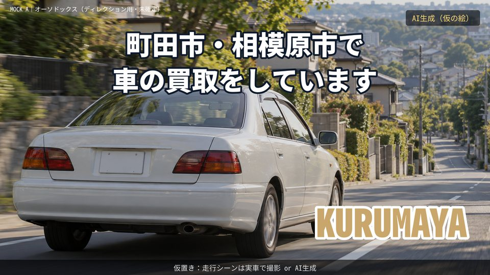
画像：走行（AI仮）
仮置き：走行シーンは実車で撮影 or AI生成
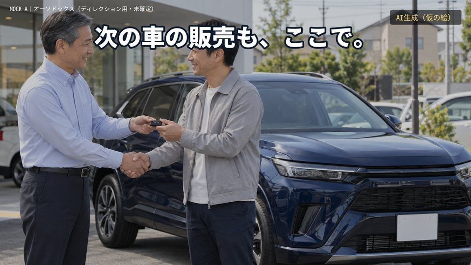
画像：鍵の受け渡し（AI仮）
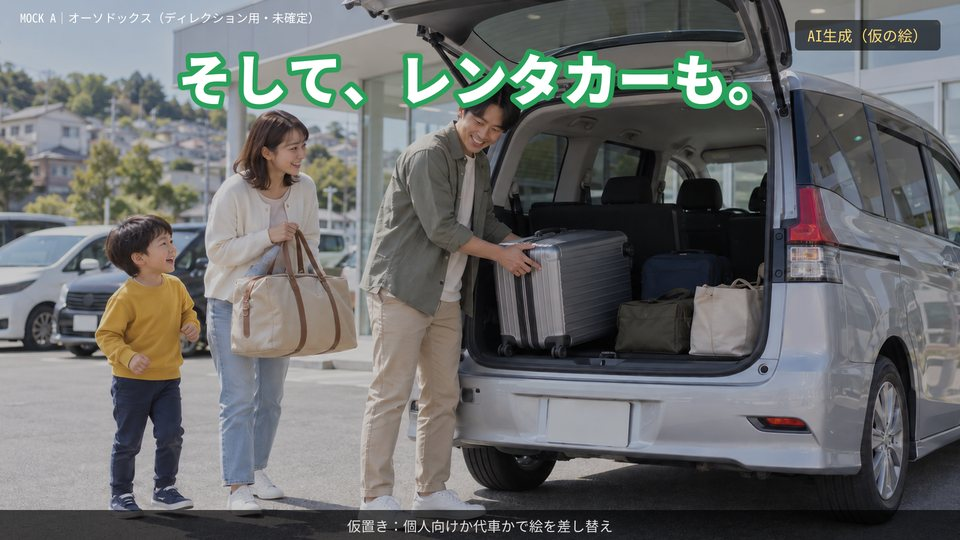
画像：家族の出発（AI仮）
仮置き：個人向けか代車かで絵を差し替え
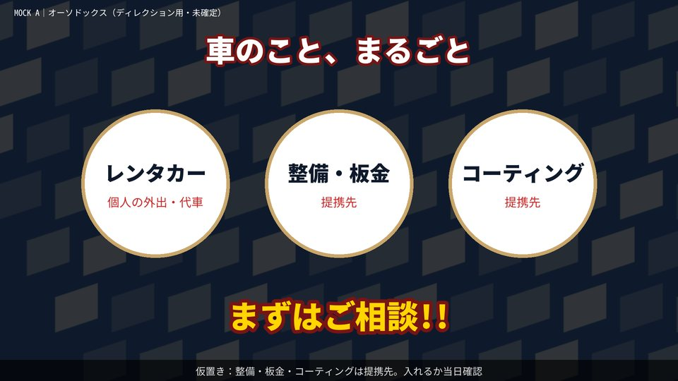
画像：アイコン
仮置き：整備・板金・コーティングは提携先。入れるか当日確認
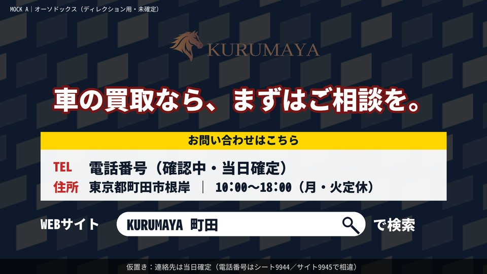
画像：エンドカード
仮置き：連絡先は当日確定（電話番号はシート9944／サイト9945で相違）
キャラ化した車の見た目は仮。目・口の付け方（実車合成／アニメ調）は2回目の打合せで選んでもらう。
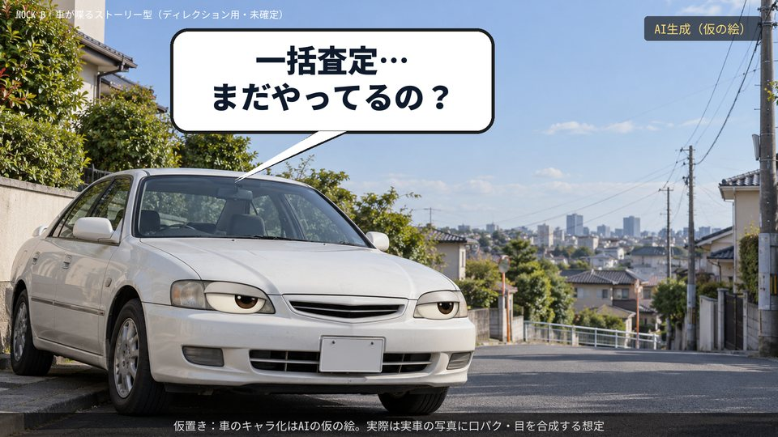
画像：喋る車（AI仮）
仮置き：車のキャラ化はAIの仮の絵。実際は実車の写真に口パク・目を合成する想定
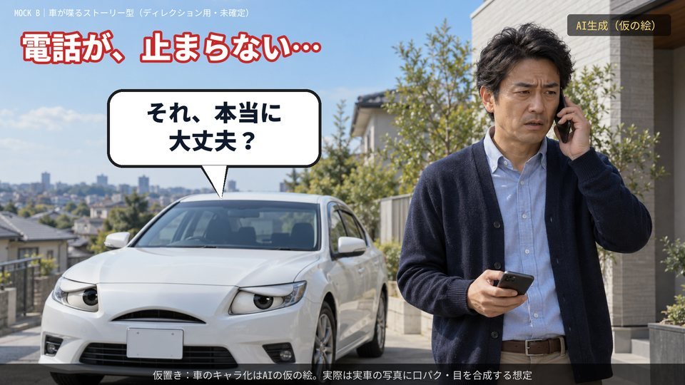
画像：困る持ち主＋車（AI仮）
仮置き：車のキャラ化はAIの仮の絵。実際は実車の写真に口パク・目を合成する想定
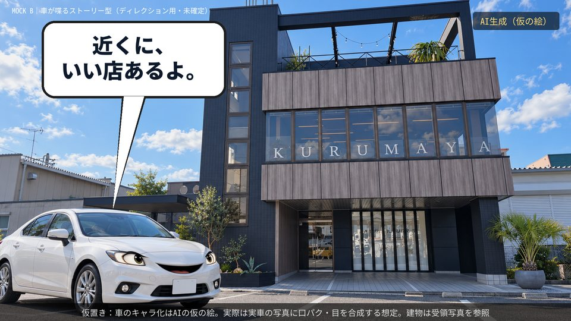
画像：建物前の車（AI仮）
仮置き：車のキャラ化はAIの仮の絵。実際は実車の写真に口パク・目を合成する想定。建物は受領写真を参照
画像：外観（実写・加工）
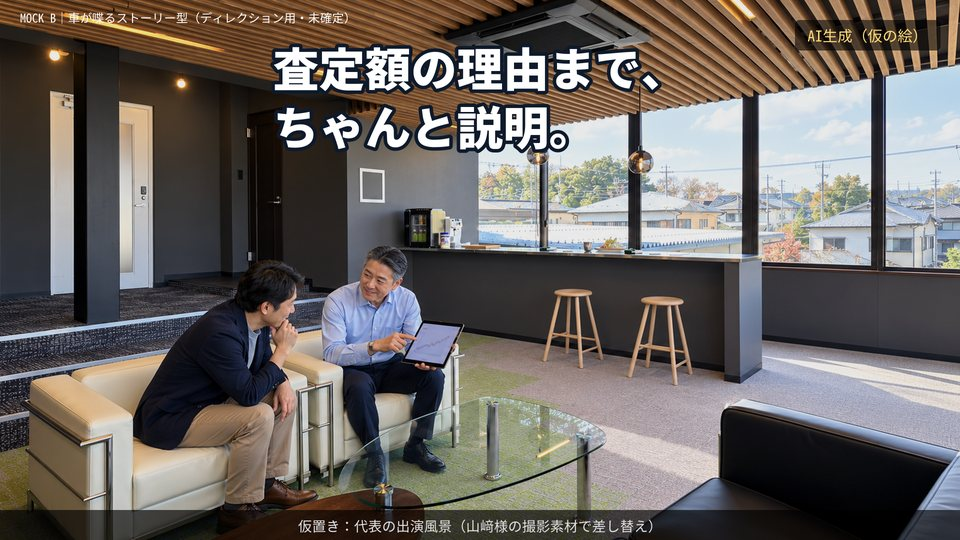
画像：代表の商談（AI仮の絵）
仮置き：代表の出演風景（山﨑様の撮影素材で差し替え）
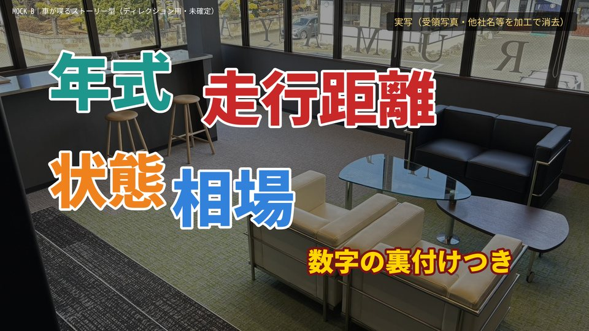
画像：店内＋単語（実写）
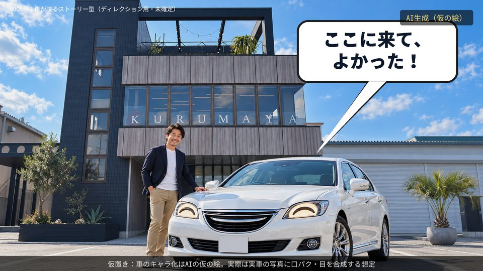
画像：満足した車と持ち主（AI仮）
仮置き：車のキャラ化はAIの仮の絵。実際は実車の写真に口パク・目を合成する想定
画像：走行（AI仮）
仮置き：走行シーンは実車で撮影 or AI生成
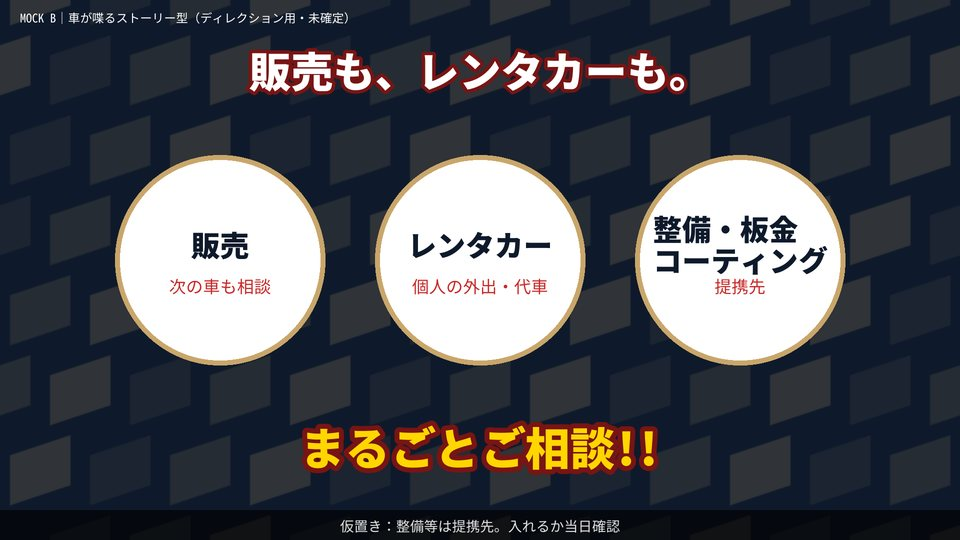
画像：アイコン
仮置き：整備等は提携先。入れるか当日確認
画像：エンドカード
仮置き：連絡先は当日確定（電話番号はシート9944／サイト9945で相違）
| 山﨑様の要望・合意 | モックでの扱い |
|---|---|
| 他社名（DETAIL WORKS・整備屋）を消す | 外観の写真でロゴと1階ガラスの文字を消去（下の比較）。仮加工 |
| テレビ画面を消す | 真っ黒な画面にし、ガラステーブルの映り込みも消去 |
| 入口・階段・雑草は映さない | 使用していない（受領写真にも無し） |
| 代表は全体の中に入る程度・顔アップなし | 引きの構図。顔のアップなし |
| 買取メイン、販売は脇 | 販売は1カット・数秒 |
| 査定額の根拠を見せる（ただしマイルドに） | 「理由まで説明」「数字の裏付け」まで。オークション画面は出さない |
| 町田・相模原／最後にレンタカー・整備等 | 走行カットのセリフ＋最後の約5秒で全サービス |
| 好きな映画：ワイルド・スピード | 未反映。車の見せ方をその方向に寄せるかは2回目に確認 |
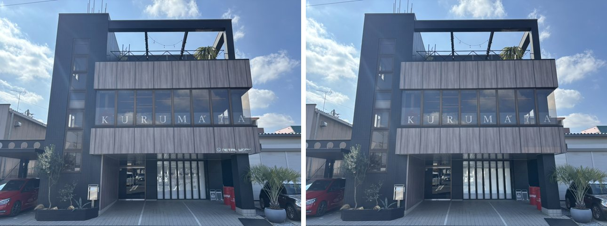
右下のロゴと1階ガラスの文字を消去。残っている赤い缶・立て看板は他社名ではないが、必要なら消す。
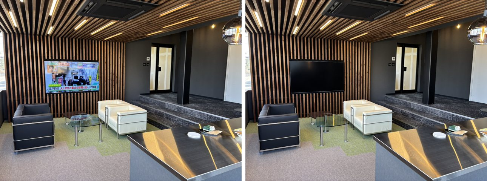
テレビの番組映像と、ガラステーブルへの映り込みを消去。
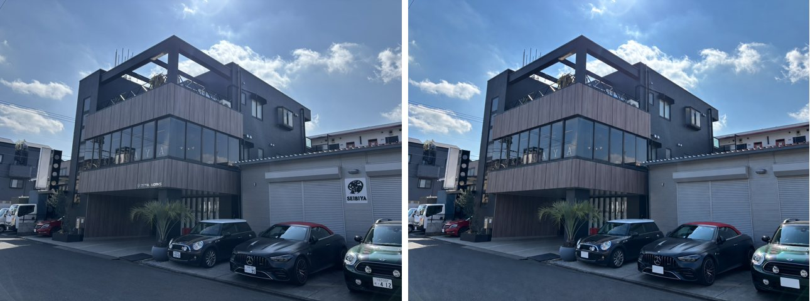
看板・ロゴ・ナンバーを消した参考加工。AIが全体を描き直したため元写真と画角が少し違う。このモックでは使用していない。